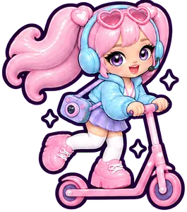

your bestie on set · 0FF THE PRINT ·
Paste the lines. Set when the talent has to leave. It does the rest.
Nothing read yet.
Part of the Kit · everything stays on this phone · add it to your home screen and it opens with no signal

tap for bigmoreEvery day saves itself, every tap.
Pick a lesson, then a level. Clear it to earn a star. Stars make you a star.
Every star, streak and trophy you earned in Training.
Nine steps. That is the whole game.
How the set plays. Each day keeps its own stops, warm-up and pace under More when you start it.
Sweet Takes · everything stays on this phone · part of the Kit
Read them once. No need to memorize: we do one line at a time.
Tap a line to see it big · sent with Sweet Takes by 0FF THE PRINT